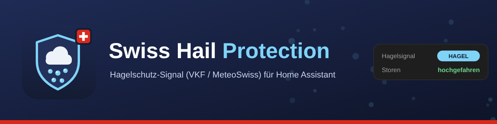

Swiss hail warnings for your blinds: either the official VKF hail-protection signal («Hagelschutz – einfach automatisch», for buildings registered with the cantonal building insurers, about 20 minutes ahead) or the MeteoSwiss hail radar — probability of hail and expected hail size around your location, open data, no registration. Both deliver the same alarm sensor for your automations.
Highlights
- Two sources, one alarm: the VKF hail-warning signal for a registered device or the MeteoSwiss hail radar around any location — both drive the same alarm binary sensor.
- VKF signal: about 20 minutes of lead time, all year, polled every 120 seconds as the service requires; the status sensor tells a test alarm from a real one.
- MeteoSwiss radar: no registration; probability of hail and expected hail size on a 1 km grid, April to September, with a radius and an alarm threshold you set.
- Blinds up, then back: the blueprint raises the blinds on an alarm, remembers their positions and restores them after a hold time.
- Built for the automation editor: triggers (hail alarm started, hail alarm cleared, VKF test alarm started) and conditions (hail alarm is / is not active) — no templates needed.
- A dashboard without building one: the bundled strategy shows every entry by itself.
- Never a stale value: all entities go unavailable while the service is unreachable or has published nothing for 20 minutes, and a repair notice tells you.
- Set up in a minute: serial and interface id for the VKF signal, or a radius around your Home Assistant location for the radar; German, English, French and Italian; diagnostics download with serial and coordinates redacted.
How to install
Open Settings → Marketplace in Home Assistant, search for Swiss Hail Protection and download it. Restart Home Assistant, then add the integration under Settings → Devices & services. Free and open source, no account needed. The full documentation is in the README on GitHub.
Deutsch: Hagelwarnung und Hagelschutz für Storen in der Schweiz
Schweizer Hagelwarnung für deine Storen: entweder das offizielle VKF-Hagelschutzsignal («Hagelschutz – einfach automatisch», für bei den kantonalen Gebäudeversicherungen registrierte Gebäude, rund 20 Minuten im Voraus) oder das MeteoSchweiz-Hagelradar — Hagelwahrscheinlichkeit und erwartete Korngrösse rund um deinen Standort, Open Data, ohne Registrierung. Beide liefern denselben Alarmsensor für deine Automationen.
Français: Alertes de grêle pour stores en Suisse
Alerte grêle suisse pour vos stores : soit le signal officiel de protection contre la grêle de l'AEAI/VKF (« Hagelschutz – einfach automatisch », pour les bâtiments enregistrés auprès des établissements cantonaux d'assurance, environ 20 minutes à l'avance), soit le radar grêle de MétéoSuisse — probabilité de grêle et taille attendue des grêlons autour de votre lieu, open data, sans inscription. Les deux fournissent le même capteur d'alarme pour vos automatisations.
Italiano: Allerte grandine per tapparelle e tende in Svizzera
Allarme grandine svizzero per le tue tapparelle: il segnale ufficiale di protezione antigrandine dell'AICAA/VKF («Hagelschutz – einfach automatisch», per edifici registrati presso gli istituti cantonali di assicurazione, circa 20 minuti prima) oppure il radar grandine di MeteoSvizzera — probabilità di grandine e dimensione attesa dei chicchi attorno alla tua località, open data, senza registrazione. Entrambi forniscono lo stesso sensore di allarme per le tue automazioni.
More integrations
Swiss MeteoSwiss WatersSwiss Public AlertsSwiss Avalanche BulletinSwiss EarthquakesSwiss TransportSwiss Charging StationsAustrian Charging StationsSwiss ParkingSwiss Shared MobilitySwiss Electricity PriceSwiss Solar Reference PriceSwiss Solar ForecastInnoxel Master 3RD30 Digital InterfaceSwiss Lottery